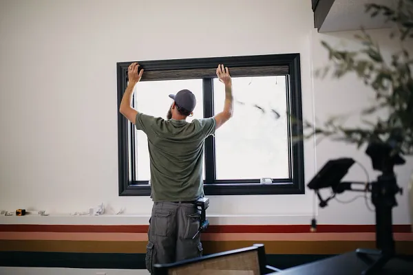

Five Reasons to Choose Custom Blinds and Shades
Call Brent & Edna today at 405-259-5599
for your window treatment questions.
There are big differences between ready-made and custom-made blinds and shades. Price is the first difference most people notice—custom-made blinds and shades can be more expensive. But that’s just one difference. We’ll talk about all the differences and explain why custom-made is the right choice for most homeowners.
Better Selection of Colors and Fabrics
When you’re buying custom-made blinds and shades, the biggest difference when compared to ready-made options is choice of materials. A ready-made collection in a store might have only a few different fabric or color options. In fact, some
retailers only carry one color—white.
With custom-made blinds and shades, you have dozens or even hundreds of options. Find blinds in a nearly endless array of slat colors in multiple sizes and textures. Choose from dozens of cellular, roller, and solar shade options and find hundreds of drapery fabrics. Graber gives you so many options that it’s nearly impossible not to find multiple colors and configurations that fit your home. This wealth of color and fabric options means you get exactly the blinds and
shades you need.
Design Expertise
When you buy custom blinds through Graber, you’re benefiting from the experience and knowledge of a Graber Design Expert who can help you pick the colors, textures, patterns, and designs that work with your décor. Having hundreds of color and fabric options gives you endless opportunities to find the perfect look for your home. But that can be daunting for many homeowners. A Graber Design Expert ensures you’ll make a window treatment selection that you’ll be happy with for many years to come.
Expert Advice, Measurement, and Installation
When you purchase custom blinds and shades from Graber, you’re not only getting the highest quality blinds and shades, you’re getting the technical expertise of your Graber Design Expert. You’re also not having to worry about measuring and installation—your Graber Design Expert takes care of all of that. With ready-made window treatments, it’s just you—measuring, selecting, installing, and hoping that you’ve done things properly.
A Perfect Fit
A window treatment that fits perfectly is worry-free and attractive. A shade or set of blinds that has been carefully built to fit the exact dimensions of a window allows very little light to seep into the room along the sides. It lifts and lowers smoothly and looks straight in the window casing.
Ready-made blinds and shades are built to fit the most common window sizes. Unfortunately, windows and the casing surrounding the windows can vary—even in the same room. So finding a ready-made window treatment that fits an unusually sized window can be like finding a needle in a haystack.
Custom-made window treatments from Graber are precisely measured and expertly installed for a flawless look and performance. The right window treatment looks as if it’s meant to be there—as if no other color or design would work on that window. And that level of perfection comes from an experienced professional working with their customer to find the right solution. That kind of excellence can never be achieved with a ready-made product.

Unbeatable Quality
Custom-made blinds and shades are top quality. Ready-made window treatments are generally constructed with cheaper
components and fabrics. And because they’re made with lower quality materials, ready-made window treatments do not function as well or last as long as custom-made blinds and shades.
That last point is most important when looking at cost. While custom-made blinds and shades have a higher price tag than ready-made options, there’s really no comparison when you consider how well custom-made window treatments perform and how much longer they will last.
Blinds and shades that perfectly match your décor. State-of-the-art cordless systems that work smoothly and quietly. Premium fabrics that are remarkably durable. Expert assistance in selection plus full-service measuring and installation. That's what you get when you purchase custom-made Graber Window Treatments from Shaded In The Sun.